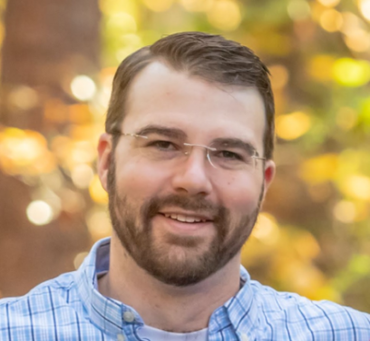

About Me
I am a MERN full-stack developer specializing in APIs and database queries.
In each of the group projects in the UNCH Coding Bootcamp, I took the role of building routes and managing the database(s).
I am a problem solver.
Few things are more gratifying than applying my full attention to a particularly challenging task to the point of resolution. In addition - a long term project coming together one piece at a time can be really enjoyable to watch grow. These are both qualities of software development which drew me to learn. I now want to make a career change and become full-time invested in these endeavors.
I am a learner.
“Live as if you were to die tomorrow. Learn as if you were to live forever.” – Mahatma Gandhi
Often, the most gratifying challenges to overcome are learning
new things. Taking this class on Web Development is certainly
filling that need right now, but the desire does not stop there.
I constantly seek out new things to learn at home and at work to
keep growing myself personally and professionally.
I am a husband and father.
I met my wife on the dating website E-Harmony in 2013. We made such a good team that we married in the summer of 2015. We soon decided that our team was so awesome that it needed to grow, and in 2016 we received a wonderful baby boy whose energy and joy are the perfect way to end any tough day.